We introduce , a multi-objective RL framework that trains a single diffusion model to approximate the entire Pareto front, enabling users to continuously navigate competing reward trade-offs at inference time — such as photorealism vs. style, or prompt adherence vs. source preservation — without retraining or maintaining multiple checkpoints.
Reinforcement Learning (RL) post-training has become the standard for aligning generative models with human preferences, yet most methods rely on a single scalar reward. When multiple criteria matter, the prevailing practice of "early scalarization" collapses rewards into a fixed weighted sum. This commits the model to a single trade-off point at training time, providing no inference-time control over inherently conflicting goals — such as prompt adherence versus source fidelity in image editing. We introduce , a multi-objective RL (MORL) framework that trains a single diffusion model to approximate the entire Pareto front. By conditioning the model on continuously varying preference weights during RL alignment, we enable users to navigate optimal trade-offs at inference time without retraining or maintaining multiple checkpoints. We evaluate across three state-of-the-art flow-matching backbones: SD3.5, FluxKontext, and LTX-2. Our single preference-conditioned model matches or exceeds the performance of separately tuned baselines while uniquely providing fine-grained, real-time control over competing generative goals.
🎯 For each prompt and sampled \(\omega\), the policy generates \(K\) images, conditioning the denoising process on both the input and the user-specified preference vector.
⚖️ Each image is scored by \(M\) reward models and normalized into per-reward advantages, decoupling reward scales so the optimization faithfully respects \(\omega\).
🔧 A DiffusionNFT loss is computed per reward and aggregated with \(\omega\) before the gradient update, steering the model toward the desired Pareto-optimal trade-off.
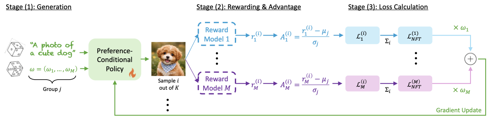
Drag the slider to continuously navigate between photorealism and different artistic styles.
Drag the slider to navigate from photorealism to animation style.
Drag the slider to navigate from full source preservation to full prompt adherence.
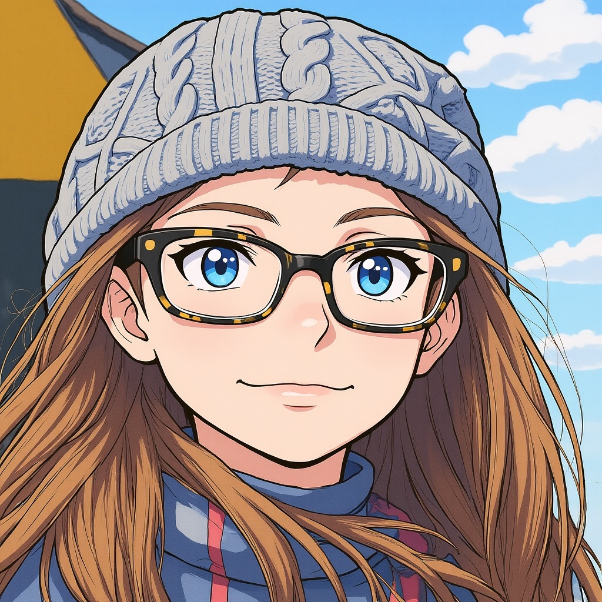
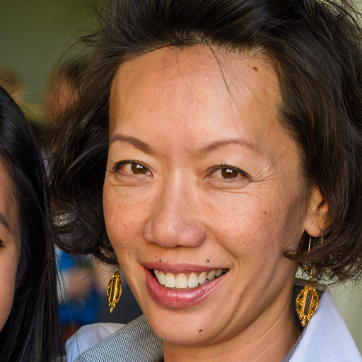
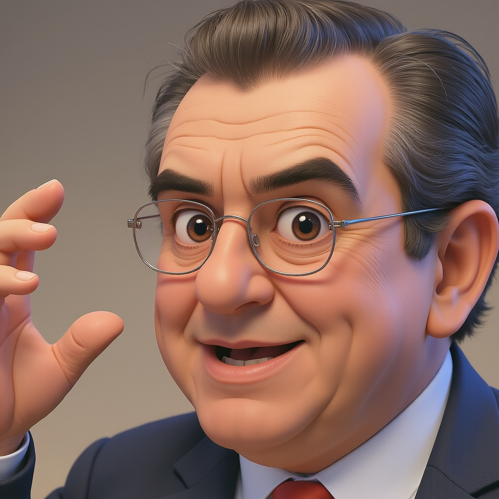
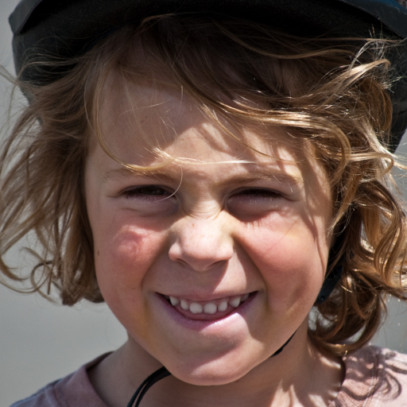
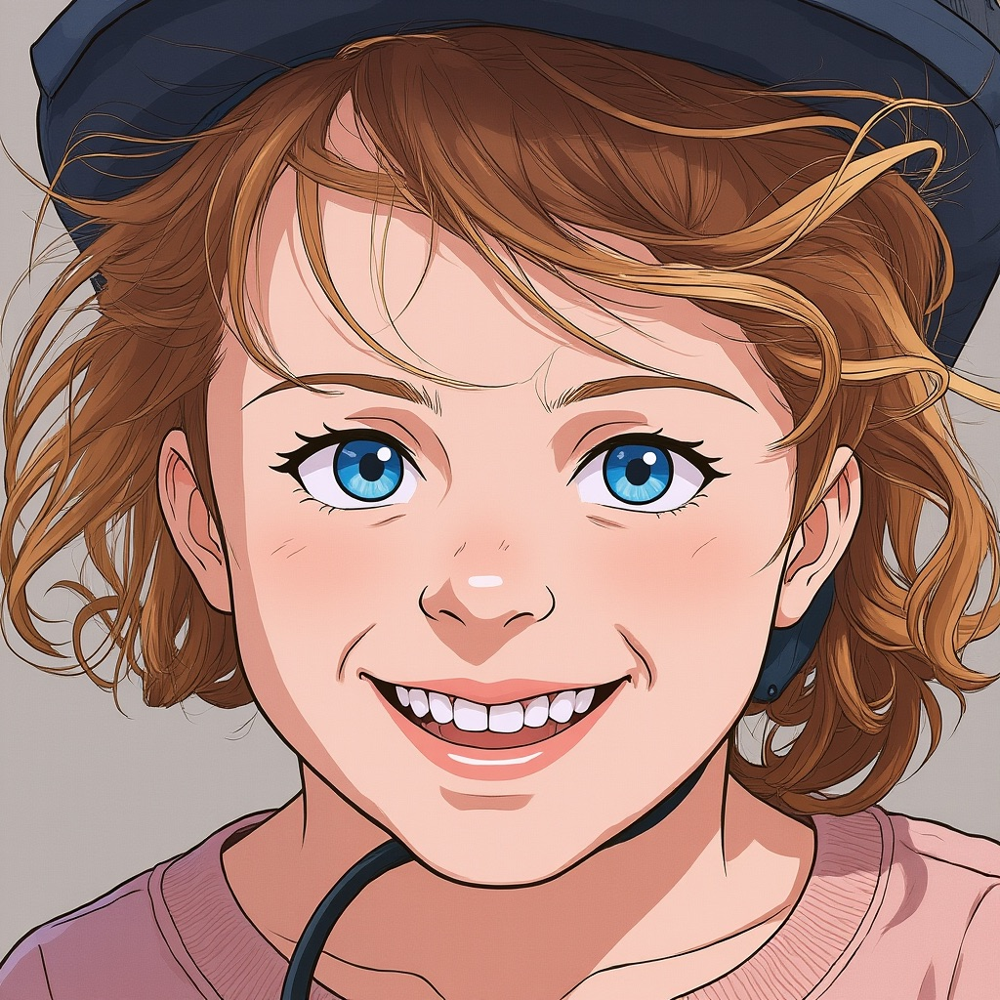
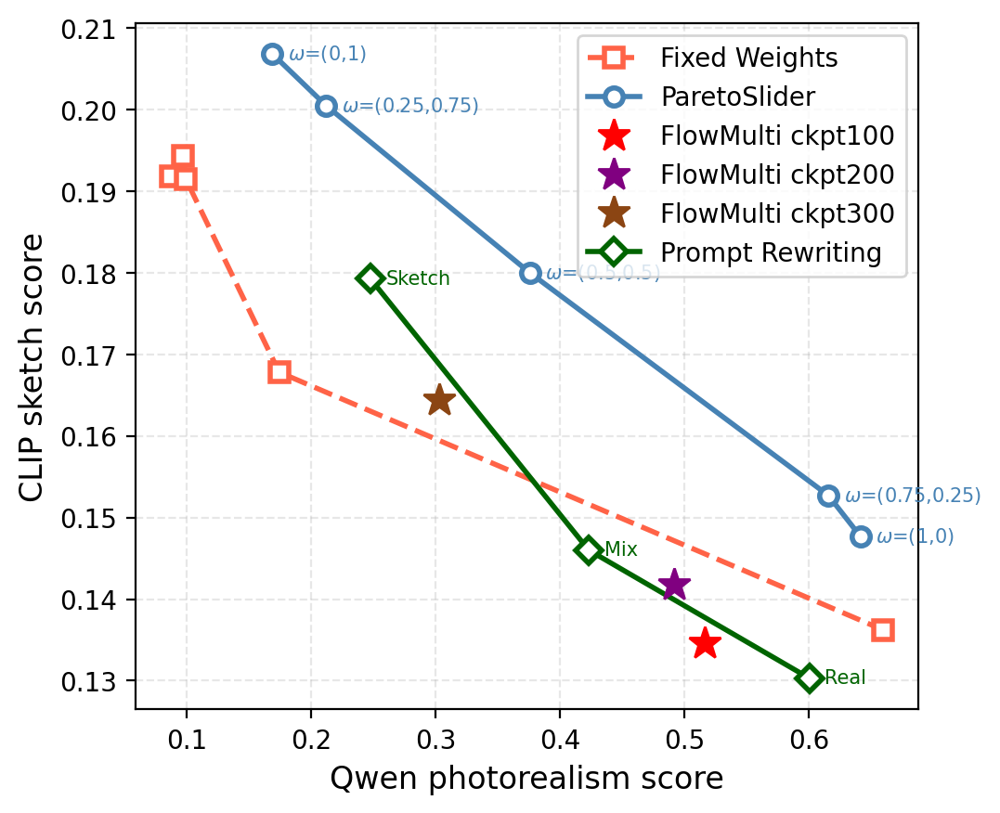
| ParetoSlider | 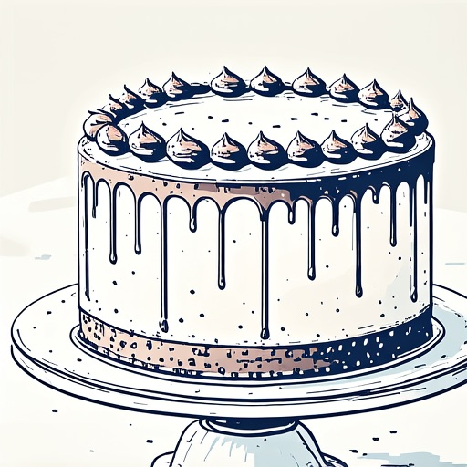 |
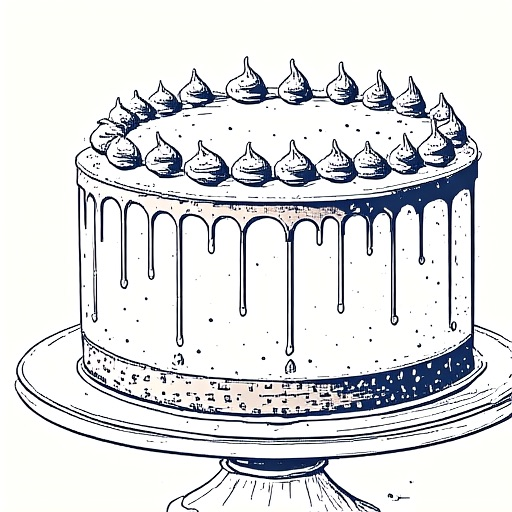 |
|||
| FixedWeight | 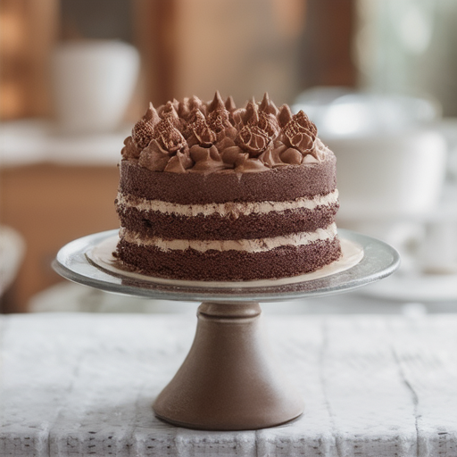 |
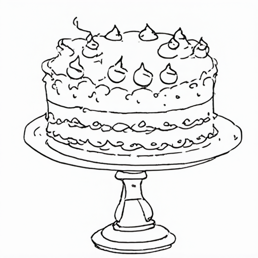 |
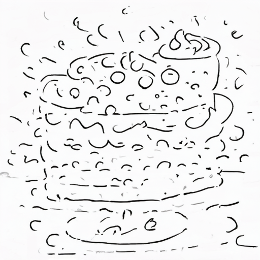 |
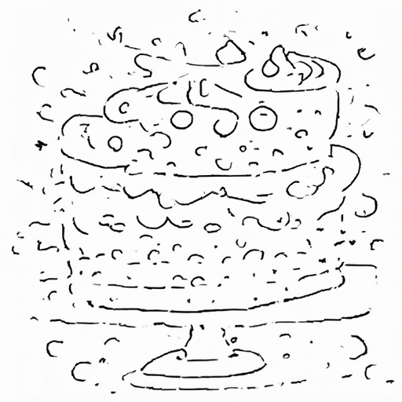 |
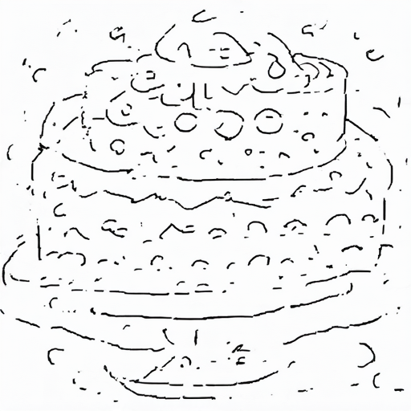 |
| Realistic ← \(\omega = (\omega_{\mathrm{real}},\, \omega_{\mathrm{sketch}})\) → Sketch | |||||
| FlowMulti | 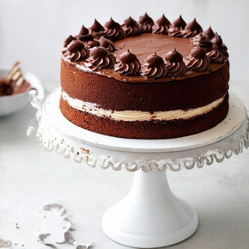 |
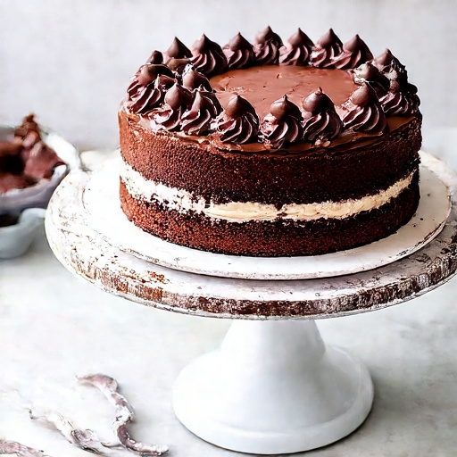 |
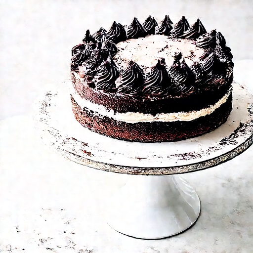 |
Prompting | 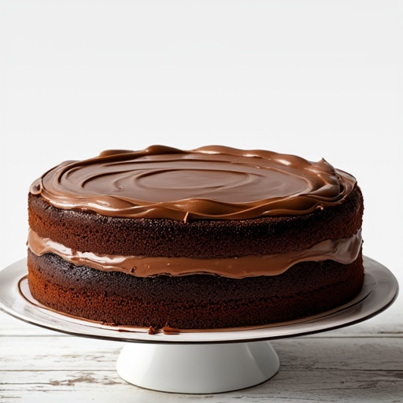 |
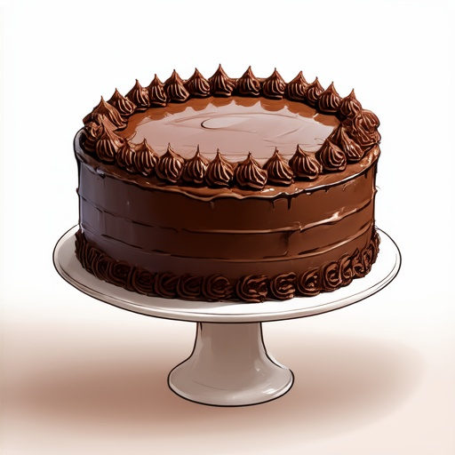 |
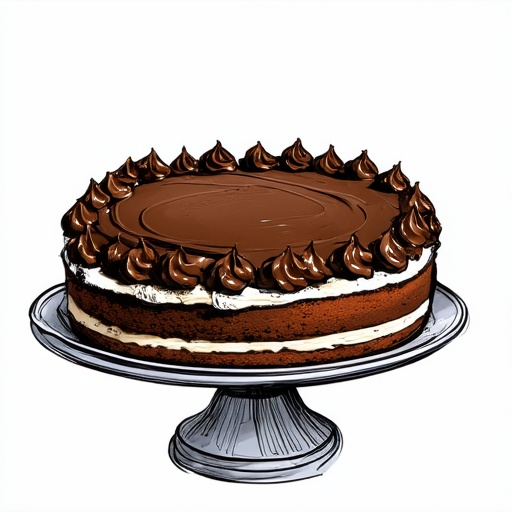 |
| Ep. 100 | Ep. 200 | Ep. 300 | Realistic | Mix | Sketch |
Pareto front and qualitative T2I comparison (SD3.5, Photorealism vs. Sketch) on the prompt "A chocolate cake with frosting on a stand." traces a continuous trade-off curve by varying \(\omega\), dominating Fixed Weights, FlowMulti, and Prompt Rewriting baselines. FixedWeight requires a separate training run per point; FlowMulti produces a single static output; Prompting yields only three coarse points. None support continuous inference-time control.